-

Temperatura dell’acqua del lago di Brienz oggi: da dove viene il dato
La temperatura dell’acqua del lago di Brienz a 70 cm sotto la superficie, per le 4 spiagge seguite, aggiornata ogni tre ore. Da dove viene il dato e che cosa non dice.
Leggi l’articolo → -
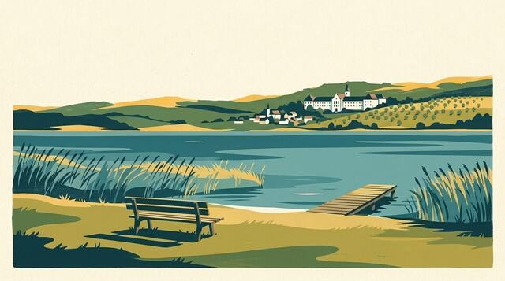
Dove fare il bagno nel lago di Baldegg: le 2 spiagge, con l’acqua del mattino
Le 2 spiagge seguite del lago di Baldegg: elenco completo con la temperatura dell’acqua del mattino, dove mangiare e bere, dove noleggiare una barca o un paddle.
-
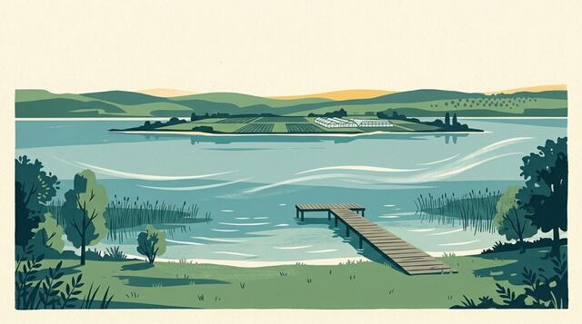
Dove fare il bagno nel lago di Costanza – Untersee: le 4 spiagge, con l’acqua del mattino
Le 4 spiagge seguite del lago di Costanza – Untersee: elenco completo con la temperatura dell’acqua del mattino, dove mangiare e bere, dove noleggiare una barca o un paddle.
-

Temperatura dell’acqua del lago di Morat oggi, spiaggia per spiaggia
La temperatura dell’acqua del lago di Morat a 70 cm sotto la superficie, davanti a ciascuna delle 4 spiagge seguite, aggiornata ogni tre ore. Da dove viene il dato e che cosa non dice.
-
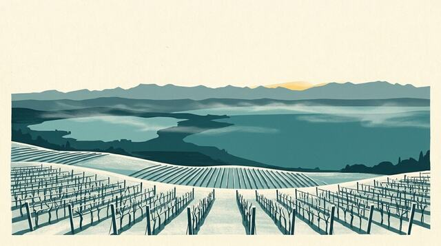
Bagno invernale nei laghi di Neuchâtel, Bienne e Morat: spiagge e saune
Bagno invernale nei laghi di Neuchâtel, Bienne e Morat: la regola di durata della SSS, l’acqua del giorno spiaggia per spiaggia, le spiagge seguite e le saune in riva all’acqua.
-
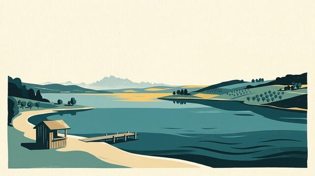
Dove fare il bagno nel lago di Sempach: le 4 spiagge, con l’acqua del mattino
Le 4 spiagge seguite del lago di Sempach: elenco completo con la temperatura dell’acqua del mattino, dove mangiare e bere, dove noleggiare una barca o un paddle.
-

Afterdrop: perché si ha ancora più freddo dopo un bagno invernale e come scaldarsi
Perché il corpo continua a raffreddarsi per una decina di minuti dopo l’uscita dall’acqua, come cambiarsi, cosa bere e cosa è meglio evitare, come la doccia calda.
-

Temperatura dell’acqua del lago dei Quattro Cantoni oggi, spiaggia per spiaggia
La temperatura dell’acqua del lago dei Quattro Cantoni a 70 cm sotto la superficie, davanti a ciascuna delle 18 spiagge seguite, aggiornata ogni tre ore. Da dove viene il dato e che cosa non dice.
-
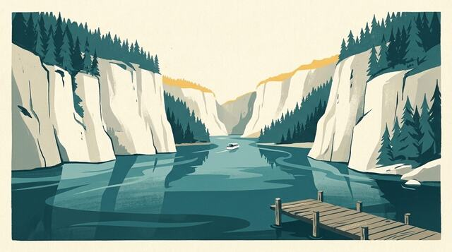
Dove fare il bagno nel Lac des Brenets: la spiaggia, con l’acqua del mattino
La spiaggia seguita del Lac des Brenets: elenco completo con la temperatura dell’acqua del mattino, dove mangiare e bere, dove noleggiare una barca o un paddle.
-
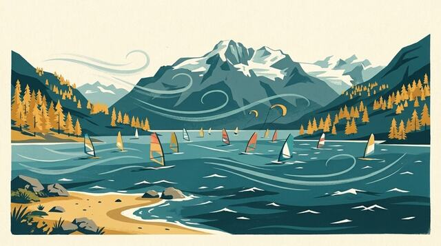
Dove fare il bagno nel lago di Silvaplana: la spiaggia, con l’acqua del mattino
La spiaggia seguita del lago di Silvaplana: elenco completo con la temperatura dell’acqua del mattino, dove mangiare e bere, dove noleggiare una barca o un paddle.
-

Qualità dell’acqua di balneazione nel Lemano: come sapere se si può fare il bagno
Chi analizza l’acqua delle spiagge del Lemano, come leggere le classificazioni e perché un’analisi di agosto non dice nulla sull’acqua di novembre.
-

Temperatura dell’acqua del lago Maggiore oggi: da dove viene il dato
La temperatura dell’acqua del lago Maggiore a 70 cm sotto la superficie, per le 7 spiagge seguite, aggiornata ogni tre ore. Da dove viene il dato e che cosa non dice.
-
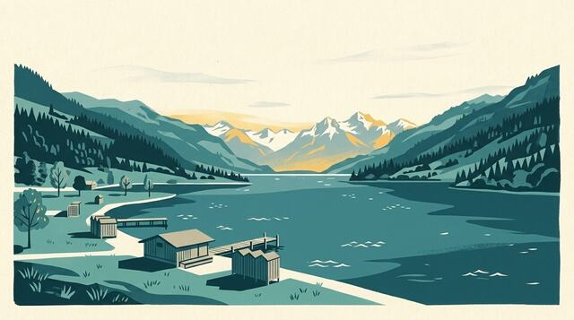
Dove fare il bagno nel lago di Sarnen: le 2 spiagge, con l’acqua del mattino
Le 2 spiagge seguite del lago di Sarnen: elenco completo con la temperatura dell’acqua del mattino, dove mangiare e bere, dove noleggiare una barca o un paddle.
-

Wakeboard, wakesurf e sci nautico sul Lemano: le scuole e i club
Da Pregny a Thonon, le scuole e i club che escono in barca per wakeboard, wakesurf e sci nautico, e perché serve un lago liscio.
-
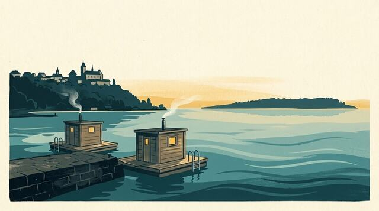
Saune galleggianti e barche-sauna in Svizzera: 6 indirizzi su quattro laghi
Barche-sauna e zattere-sauna su Lemano, lago di Bienne, lago di Zurigo e lago dei Quattro Cantoni: 6 indirizzi con punto di partenza e sito di prenotazione.
-
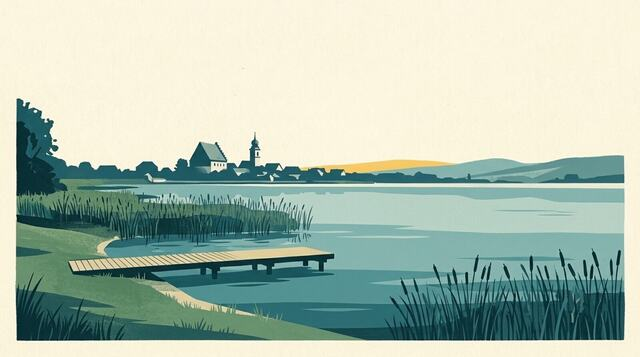
Dove fare il bagno nel Greifensee: le 3 spiagge, con l’acqua del mattino
Le 3 spiagge seguite del Greifensee: elenco completo con la temperatura dell’acqua del mattino, dove mangiare e bere, dove noleggiare una barca o un paddle.
-

Spiagge del Lemano sul lato francese: da Évian a Chens-sur-Léman
Le spiagge della riva francese del Lemano, da Meillerie a Chens-sur-Léman, con la temperatura dell’acqua del giorno, i ristoranti e le scuole di wake nei dintorni.
-

Temperatura dell’acqua del Lac de Joux oggi, spiaggia per spiaggia
La temperatura dell’acqua del Lac de Joux a 70 cm sotto la superficie, davanti a ciascuna delle 2 spiagge seguite, aggiornata ogni tre ore. Da dove viene il dato e che cosa non dice.
-
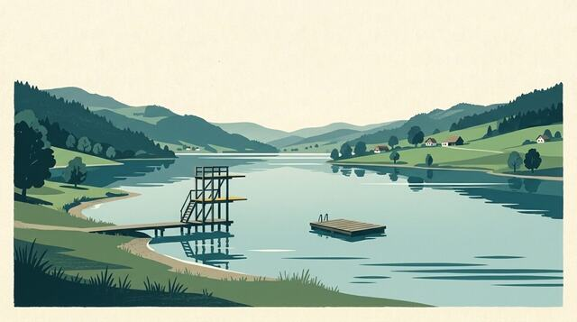
Dove fare il bagno nel lago di Ägeri: la spiaggia, con l’acqua del mattino
La spiaggia seguita del lago di Ägeri: elenco completo con la temperatura dell’acqua del mattino, dove mangiare e bere, dove noleggiare una barca o un paddle.
-
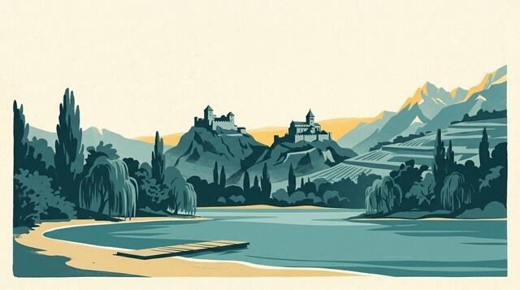
Dove fare il bagno al Domaine des Îles (Sion): la spiaggia, con l’acqua del mattino
La spiaggia seguita del Domaine des Îles (Sion): elenco completo con la temperatura dell’acqua del mattino, dove mangiare e bere, dove noleggiare una barca o un paddle.
-

Temperatura del Lemano: da dove vengono i numeri e perché variano
Come viene calcolata l’acqua del Lemano a 70 cm davanti a ogni spiaggia, perché può perdere diversi gradi in due giorni e dove consultarla in diretta.
-

Temperatura dell’acqua del lago di Costanza oggi: da dove viene il dato
La temperatura dell’acqua del lago di Costanza a 70 cm sotto la superficie, per le 12 spiagge seguite, aggiornata ogni tre ore. Da dove viene il dato e che cosa non dice.
-
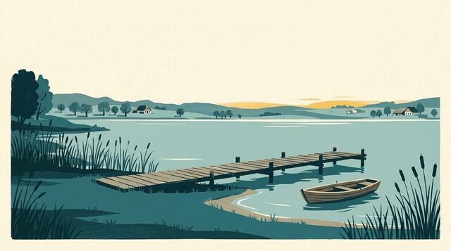
Dove fare il bagno nel lago di Hallwil: le 4 spiagge, con l’acqua del mattino
Le 4 spiagge seguite del lago di Hallwil: elenco completo con la temperatura dell’acqua del mattino, dove mangiare e bere, dove noleggiare una barca o un paddle.
-

Attrezzatura per il bagno invernale: la lista completa prima di andare al Lemano
Cuffia, scarpette e guanti in neoprene, boa da nuoto, tappetino per cambiarsi, mantella e thermos: tutto ciò che serve per un bagno invernale nel Lemano, e perché.
-
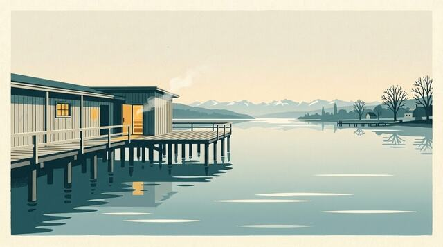
Saune sul lago di Zurigo: 4 indirizzi, dalla città a Rapperswil
Le 4 saune del lago di Zurigo seguite da Il mio lago: la sauna del Seebad Enge, la Seesauna di Stäfa e le barche-sauna. Luogo, stagione e link a ogni sito.
-
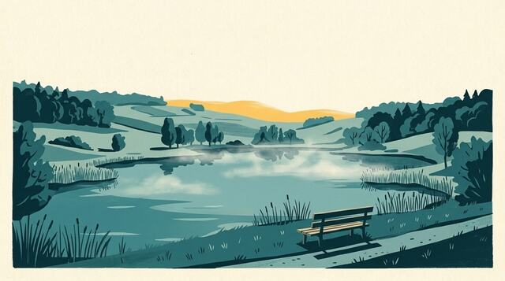
Dove fare il bagno nel Lac de Bret: la spiaggia, con l’acqua del mattino
La spiaggia seguita del Lac de Bret: elenco completo con la temperatura dell’acqua del mattino, dove mangiare e bere, dove noleggiare una barca o un paddle.
-
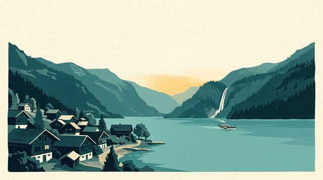
Dove fare il bagno nel lago di Brienz: le 4 spiagge, con l’acqua del mattino
Le 4 spiagge seguite del lago di Brienz: elenco completo con la temperatura dell’acqua del mattino, dove mangiare e bere, dove noleggiare una barca o un paddle.
-

Temperatura dell’acqua del lago della Gruyère oggi: da dove viene il dato
La temperatura dell’acqua del lago della Gruyère a 70 cm sotto la superficie, per le 5 spiagge seguite, aggiornata ogni tre ore. Da dove viene il dato e che cosa non dice.
-
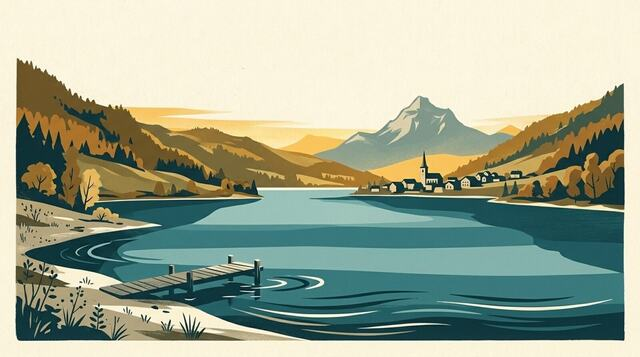
Dove fare il bagno nel lago della Gruyère: le 5 spiagge, con l’acqua del mattino
Le 5 spiagge seguite del lago della Gruyère: elenco completo con la temperatura dell’acqua del mattino, dove mangiare e bere, dove noleggiare una barca o un paddle.
-
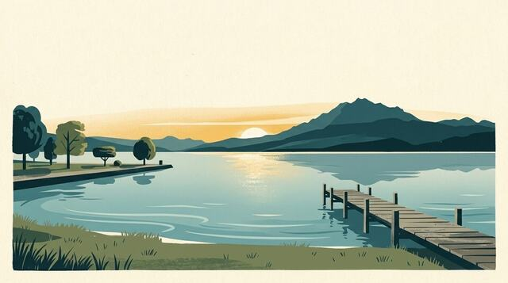
Dove fare il bagno nel lago di Zugo: le 15 spiagge, con l’acqua del mattino
Le 15 spiagge seguite del lago di Zugo: elenco completo con la temperatura dell’acqua del mattino, dove mangiare e bere, dove noleggiare una barca o un paddle.
-

Kitesurf, windsurf e wingfoil sul Lemano: il vento giusto e i posti giusti
Quale forza del vento per kitesurf, windsurf e foil sul Lemano, perché la bise fa i migliori downwind e dove noleggiare o imparare.
-

Temperatura dell’acqua del lago di Thun oggi: da dove viene il dato
La temperatura dell’acqua del lago di Thun a 70 cm sotto la superficie, per le 8 spiagge seguite, aggiornata ogni tre ore. Da dove viene il dato e che cosa non dice.
-
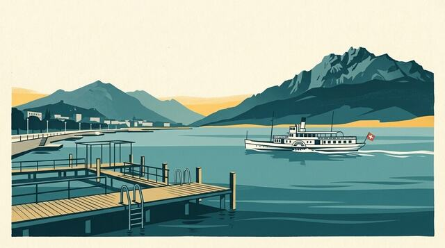
Dove fare il bagno nel lago dei Quattro Cantoni: le 18 spiagge, con l’acqua del mattino
Le 18 spiagge seguite del lago dei Quattro Cantoni: elenco completo con la temperatura dell’acqua del mattino, dove mangiare e bere, dove noleggiare una barca o un paddle.
-

Dove fare il bagno a Ginevra: le spiagge del cantone, una per una
Dai Bains des Pâquis a Hermance: le spiagge ginevrine del Lemano con i loro chioschi e la temperatura dell’acqua del giorno per ciascuna.
-
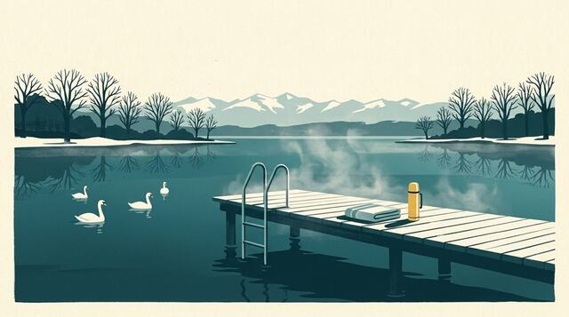
Bagno invernale a Zurigo: spiagge del lago, acqua del giorno e saune
Bagno invernale nel lago di Zurigo e nel Greifensee: la regola di durata della SSS, l’acqua del giorno spiaggia per spiaggia, le spiagge seguite e le saune in riva al lago.
-
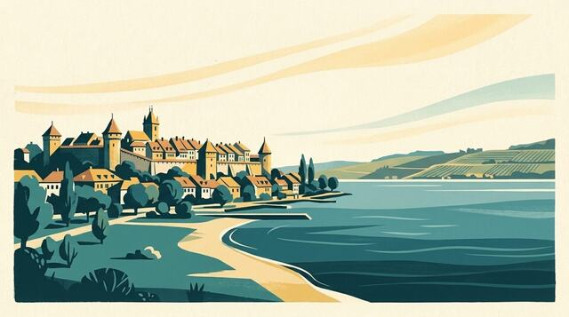
Dove fare il bagno nel lago di Morat: le 4 spiagge, con l’acqua del mattino
Le 4 spiagge seguite del lago di Morat: elenco completo con la temperatura dell’acqua del mattino, dove mangiare e bere, dove noleggiare una barca o un paddle.
-
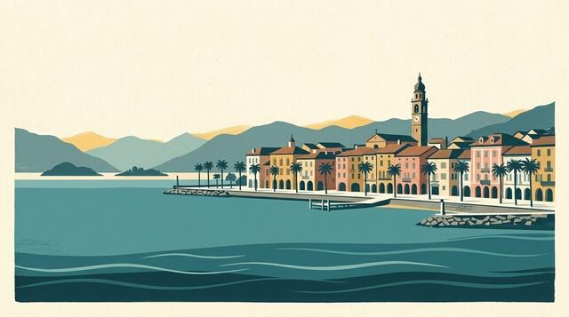
Dove fare il bagno nel lago Maggiore: le 7 spiagge, con l’acqua del mattino
Le 7 spiagge seguite del lago Maggiore: elenco completo con la temperatura dell’acqua del mattino, dove mangiare e bere, dove noleggiare una barca o un paddle.
-

Paddle sul Lemano: quando il lago è abbastanza calmo e dove noleggiare
Da quale vento il paddle diventa difficile sul Lemano, come leggere le raffiche e i noleggi di paddle da Ginevra a Saint-Gingolph.
-

Temperatura dell’acqua del lago di Bienne oggi, spiaggia per spiaggia
La temperatura dell’acqua del lago di Bienne a 70 cm sotto la superficie, davanti a ciascuna delle 7 spiagge seguite, aggiornata ogni tre ore. Da dove viene il dato e che cosa non dice.
-
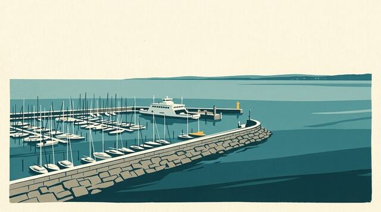
Dove fare il bagno nel lago di Costanza: le 12 spiagge, con l’acqua del mattino
Le 12 spiagge seguite del lago di Costanza: elenco completo con la temperatura dell’acqua del mattino, dove mangiare e bere, dove noleggiare una barca o un paddle.
-

Bagno invernale nel Lemano: iniziare bene a Ginevra e a Losanna
Quanto restare in acqua, come entrare, dove fare il bagno e scaldarsi a Ginevra e a Losanna: la guida al bagno invernale nel Lemano, con l’acqua del giorno spiaggia per spiaggia.
-

Temperatura dell’acqua del lago di Lugano oggi, spiaggia per spiaggia
La temperatura dell’acqua del lago di Lugano a 70 cm sotto la superficie, davanti a ciascuna delle 14 spiagge seguite, aggiornata ogni tre ore. Da dove viene il dato e che cosa non dice.
-
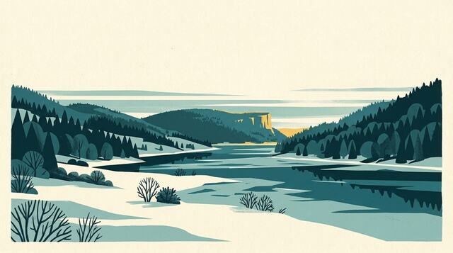
Dove fare il bagno nel Lac de Joux: le 2 spiagge, con l’acqua del mattino
Le 2 spiagge seguite del Lac de Joux: elenco completo con la temperatura dell’acqua del mattino, dove mangiare e bere, dove noleggiare una barca o un paddle.
-
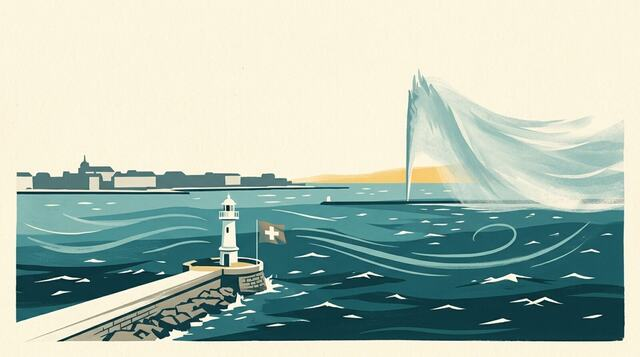
La bise sul Lemano: cosa cambia per balneazione, paddle e kite
Da dove viene la bise, come riconoscerla e da quando disturba balneazione e paddle, mentre kitesurfisti, windsurfisti e foiler la aspettano.
-

Temperatura dell’acqua del lago di Zurigo oggi, spiaggia per spiaggia
La temperatura dell’acqua del lago di Zurigo a 70 cm sotto la superficie, davanti a ciascuna delle 20 spiagge seguite, aggiornata ogni tre ore. Da dove viene il dato e che cosa non dice.
-
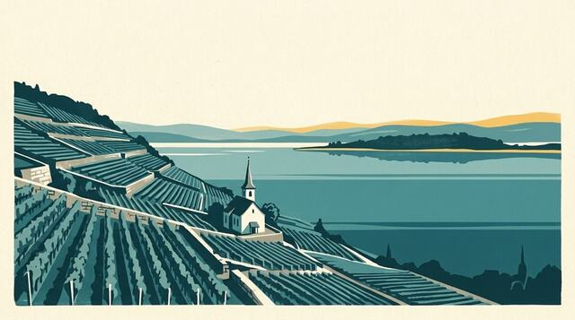
Dove fare il bagno nel lago di Bienne: le 7 spiagge, con l’acqua del mattino
Le 7 spiagge seguite del lago di Bienne: elenco completo con la temperatura dell’acqua del mattino, dove mangiare e bere, dove noleggiare una barca o un paddle.
-
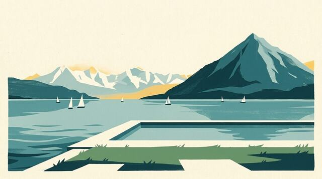
Dove fare il bagno nel lago di Thun: le 8 spiagge, con l’acqua del mattino
Le 8 spiagge seguite del lago di Thun: elenco completo con la temperatura dell’acqua del mattino, dove mangiare e bere, dove noleggiare una barca o un paddle.
-
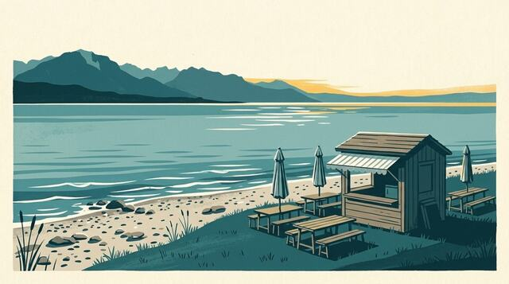
Chioschi e ristoranti in riva al Lemano: i nostri indirizzi con i piedi nell’acqua
Le terrazze in riva all’acqua di Ginevra, La Côte, Losanna, la Riviera e la riva francese, con le loro stagioni di apertura.
-
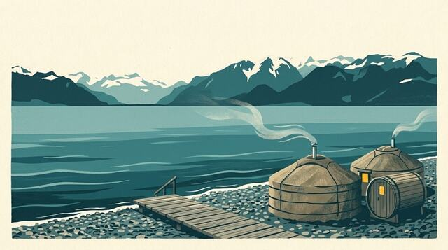
Saune in riva al Lemano: i 11 indirizzi, da Ginevra a Vevey
Le 11 saune in riva al Lemano seguite da Il mio lago: iurte, botti, una barca-sauna, bagni storici. Stagione, luogo e link al sito di ciascuna.
-
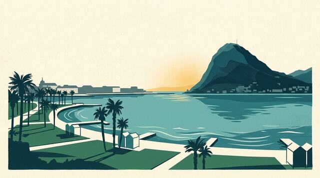
Dove fare il bagno nel lago di Lugano: le 14 spiagge, con l’acqua del mattino
Le 14 spiagge seguite del lago di Lugano: elenco completo con la temperatura dell’acqua del mattino, dove mangiare e bere, dove noleggiare una barca o un paddle.
-

Shock da freddo: i primi 90 secondi nell’acqua fredda del Lemano
Cosa fa il corpo entrando in acqua a 10 °C, perché non bisogna tuffarsi, come respirare nel primo minuto e perché andare dal medico prima di cominciare.
-

Temperatura dell’acqua del lago di Neuchâtel oggi, spiaggia per spiaggia
La temperatura dell’acqua del lago di Neuchâtel a 70 cm sotto la superficie, davanti a ciascuna delle 15 spiagge seguite, aggiornata ogni tre ore. Da dove viene il dato e che cosa non dice.
-
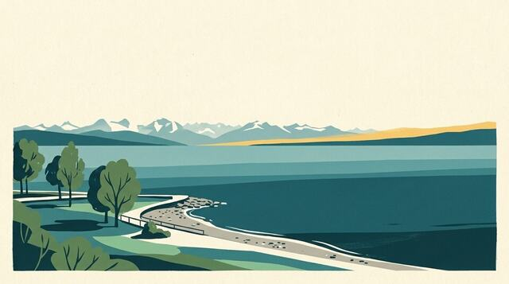
Dove fare il bagno nel lago di Neuchâtel: le 15 spiagge, con l’acqua del mattino
Le 15 spiagge seguite del lago di Neuchâtel: elenco completo con la temperatura dell’acqua del mattino, dove mangiare e bere, dove noleggiare una barca o un paddle.
-
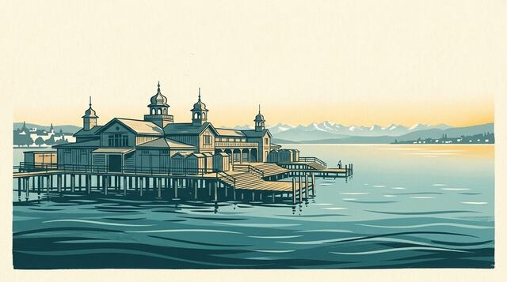
Dove fare il bagno nel lago di Zurigo: le 20 spiagge, con l’acqua del mattino
Le 20 spiagge seguite del lago di Zurigo: elenco completo con la temperatura dell’acqua del mattino, dove mangiare e bere, dove noleggiare una barca o un paddle.